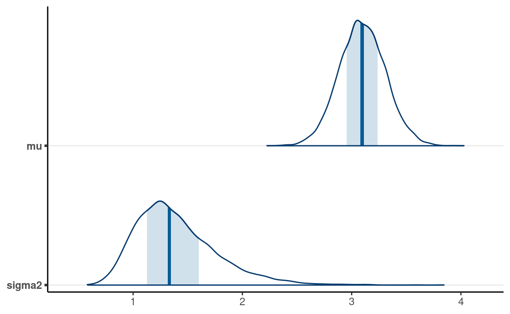

In the previous note, we learn about the Metropolis algorithm. While the algorithm is very general and easy to implement, it is inefficient because the effective sample size is only about 1/4 of the actual number of draws for a one-parameter model. The Meteropolis algorithm usually gets stuck when there are multiple parameters. Therefore, until about 2010, many Bayesian analyses relied on a more efficient algorithmthe Gibbs sampler. The Gibbs sampler uses conjugate priors on the conditional posterior distributions to get proposal values with high acceptance probability (its 100%). Well also see the normal model with two parameters: mean and variance.
Data
The data set was from one of the studies reported in a paper published in Psychological Science in 2014. The authors compared participants performance on conceptual questions after taking notes either using laptops or notebooks (longhand). Lets import the data directly from the Open Science Framework (https://osf.io/qrs5y/):
# Use haven::read_sav() to import SPSS data
nt_dat <- read_sav("https://osf.io/qrs5y/download")
One outcome variable the authors studied is the number of words in participants notes. Here are the distributions of the variable wordcount for the two conditions (0 = laptop, 1 = longhand).
ggplot(nt_dat, aes(x = wordcount)) +
geom_histogram(bins = 10) +
facet_wrap(~ condition)
The variable is somewhat skewed. Well focus on the control group (laptop) first, so lets create a variable for that data. Well also divide the count by 100.
(wc_laptop <- nt_dat$wordcount[nt_dat$condition == 0] / 100)
#> [1] 4.20 4.61 5.72 4.47 3.34 1.27 2.65 3.40 2.43 2.55 2.73 2.26 3.16
#> [14] 2.47 3.25 1.67 4.49 4.77 1.67 5.19 3.00 2.98 1.59 2.23 4.39 2.29
#> [27] 1.52 2.13 3.11 3.82 2.62The Normal Model
While only an approximation, the normal distribution is a popular choice for modeling variables that are relatively symmetric and have more than a few discrete values. The normal distribution has two parameters; in some situations, there are advantages to choosing a certain parameterization. With the Gibbs sampler, we will parameterize it using the mean parameter, \(\mu\), and the variance parameter, \(\sigma^2\). The model is \[\text{wc_laptop}_i \sim N(\mu, \sigma^2)\] Note again that there are no subscripts to \(\mu\) and \(\sigma^2\), indicating exchangeability assumption.
Conjugate (Actually Semiconjugate) Priors
It can be shown that when \(\sigma^2\) is known, a conjugate prior to \(\mu\) is a normal prior, meaning that the posterior is also normal. However, when \(\sigma^2\) is unknown, the prior distribution needs to be a joint distribution of two parameters.
What we can do is to consider the conditional distribution of a parameter. So instead of drawing a posterior sample from the joint posterior, \(P(\mu, \sigma^2 \mid y)\), we consider each parameter separately, by drawing from the conditional of \(P(\sigma^2 \mid \mu^{(s - 1)}, y)\) first, and then from \(P(\mu \mid \sigma^2 = {\sigma^2}^{(s)}, y)\) with \({\sigma^2}^{(s)}\) being the previous draw, and then continuing with \(P(\sigma^2 \mid \mu^{(s)}, y)\). The advantage to do so is because we can use a conjugate normal prior for \(\mu\) when conditioning on \(\sigma^2\). We also have a conjugate prior for \(\sigma^2\) when conditioning on \(\mu\), which will be discussed later. Here is how the algorithm works:
- Set an initial value for \({\sigma^2}{(1)}\)
- At iteration \(s\), given sample \({\sigma^2}^{(s - 1)}\), sample \(\mu^{(s)}\) from the conditional posterior, \(P(\mu \mid {\sigma^2}^{(s)}, y)\)
- Given \(\mu^{(s)}\), sample \({\sigma^2}^{(s)}\) from the conditional posterior, \(P(\sigma^2 \mid \mu^{(s - 1)}, y)\)
- Repeat steps 2 and 3
It can be shown that with this Gibbs algorithm, the posterior draws will be from the joint posterior of \(P(\mu, \sigma^2 \mid y)\).
Below I provide more details of the conjugacy. The actual detail is not the most important for this class because, in practice, the computation will likely be handled by the software. You may want to, however, pay attention to the suggested meanings of the hyperparameters:
- \(\mu_0\): Prior mean
- \(\tau_0^2\): Prior variance (i.e., uncertainty) of the mean
- \(\nu_0\): Prior sample size for the variance
- \(\sigma^2_0\): Prior expectation of the variance
For \(\mu \mid \sigma^2\)
A conjugate prior for \(\mu \mid \sigma^2\) is \(\mu \sim N(\mu_0, \tau_0^2)\), which gives the posterior conditional \[\mu \mid \sigma^2, y \sim N(\mu_n, \tau_n^2),\] where \[ \begin{aligned} \tau_n^2 & = \left(\frac{1}{\tau_0^2} + \frac{n}{\sigma^2}\right)^{-1} \\ \mu_n & = \tau_n^2 \left(\frac{\mu_0}{\tau_0^2} + \frac{n \bar y}{\sigma^2}\right) \end{aligned}, \] with \(n\) being the number of observations in the data and \(\bar y\) is the sample mean of the data. The hyperparameters, \(\mu_0\) and \(\tau_0^2\), can be considered the prior mean and the prior variance of the mean, with a smaller prior variance indicating a stronger prior.
For \(\sigma^2 \mid \mu\)
A conjugate prior for \(\mu \mid \sigma^2\) is from the Inverse-Gamma family: \(\sigma^2 \sim \text{Inv-Gamma}(\nu_0 / 2, \nu_0 \sigma^2_0 / 2)\). You usually only hear about the Inverse-Gamma distribution in Gibbs sampling, mainly because of conjugacy. As the name suggested, the Inverse-Gamma distribution is the distribution of the inverse of a variable that follows a Gamma distribution. So we also write \(1 / \sigma^2 \sim \mathrm{Gamma}(\nu_0 / 2, \nu_0 \sigma^2_0 / 2)\).
The posterior is also Inverse-Gamma, with \[1 / \sigma^2 \mid \mu^2, y \sim \mathrm{Gamma}(\nu_n / 2, \nu_n \sigma^2_n [\mu] / 2),\] where \[ \begin{aligned} \nu_n & = \nu_0 + n \\ \sigma^2_n (\mu) & = \frac{1}{\nu_n} \left[\nu_0 \sigma^2_0 + (n - 1) s^2_y + \sum (\bar y - \mu)^2\right] \end{aligned}, \] with \(s^2_y = \sum (y_i - \bar y)^2 / (n - 1)\) being the sample variance of \(y\). The hyperparameters, \(\nu_0\) and \(\sigma^2_0\), can be considered the prior degrees of freedom and prior expected value of variance; \(\nu_0\) can be roughly considered as the prior sample size.
Prior, Model, and Posterior
We will use some weakly informative priors, written in the following equations:
Model: \[\text{wc_laptop}_i \sim N(\mu, \sigma^2)\] Prior: \[ \begin{aligned} \mu & \sim N(5, 10^2) \\ 1 / \sigma^2 & \sim \mathrm{Gamma}(1 / 2, [1] [1] / 2) \end{aligned} \]
The priors are very weak. We also assume that the priors are independent, which is commonly the case. Here are some simulated data from these priors:
num_draws <- 100
mu <- rnorm(num_draws, mean = 5, sd = 10)
inv_sigma2 <- rgamma(num_draws,
shape = 1 / 2, rate = 1 / 2)
num_obs <- length(wc_laptop)
# Initialize an S by N matrix to store the simulated data
y_tilde <- matrix(NA,
nrow = num_draws,
ncol = num_obs)
for (s in seq_len(num_draws)) {
mu_s <- mu[s]
sigma2_s <- 1 / inv_sigma2[s]
y_tilde[s, ] <- rnorm(num_obs, mean = mu_s, sd = sqrt(sigma2_s))
}
# Plot the simulated data (in lighter lines)
# and the current data (in the darker line)
ppc_dens_overlay(wc_laptop, yrep = y_tilde)
The plot shows the types of data one can get. One can do better by avoiding the negative values if desired.
Gibbs Sampler
The following is the full Gibbs sampler for the above normal model.
# Sufficient statistics from data
ybar <- mean(wc_laptop) # sample mean
s2y <- var(wc_laptop) # sample variance
n <- length(wc_laptop) # sample size
# Hyperparameters
mu_0 <- 5
sigma2_0 <- 1
tau2_0 <- 10^2
nu_0 <- 1
# Initialize the Gibbs sampler
set.seed(2120)
num_draws <- 10000
num_warmup <- num_draws / 2
num_chains <- 2
# Initialize a 3-D array (S x # chains x 2 parameters)
post_all_draws <- array(
dim = c(num_draws, num_chains, 2),
dimnames = list(NULL, NULL, c("mu", "sigma2"))
)
# Step 1: starting values for sigma2
post_all_draws[1, 1, "sigma2"] <- 1 # for chain 1
post_all_draws[1, 2, "sigma2"] <- 3 # for chain 2
for (s in seq_len(num_draws - 1)) {
for (j in seq_len(num_chains)) {
sigma2_s <- post_all_draws[s, j, "sigma2"]
# Step 2: Sample mu from the conditional posterior
tau2_n <- 1 / (1 / tau2_0 + n / sigma2_s)
mu_n <- tau2_n * (mu_0 / tau2_0 + n * ybar / sigma2_s)
mu_new <- rnorm(1, mean = mu_n, sd = sqrt(tau2_n))
post_all_draws[s + 1, j, "mu"] <- mu_new
# Step 3: Sample sigma2 from the conditional posterior
nu_n <- nu_0 + n # you could put this line outside the loop
sigma2_n <- 1 / nu_n *
(nu_0 * sigma2_0 + (n - 1) * s2y + (ybar - mu_new)^2)
sigma2_new <- 1 / rgamma(1,
shape = nu_n / 2,
rate = nu_n * sigma2_n / 2
)
post_all_draws[s + 1, j, "sigma2"] <- sigma2_new
}
}
# Draws after warm-up
post_draws <- post_all_draws[- (1:num_warmup), , ]
Visualizing the Jumps
The plot below shows the jumps for 20 iterations in one chain, with the intermediate steps
Convergence Check
# Convert to `draws_array` object to use the following functions
post_draws_array <- as_draws_array(post_draws)
# Trace plots
mcmc_trace(post_draws_array) # good mixing
# Rank histograms
mcmc_rank_hist(post_draws_array) # good mixing
# Summary (with rhat and ESS)
summarize_draws(post_draws_array)
#> # A tibble: 2 10
#> variable mean median sd mad q5 q95 rhat ess_bulk
#> <chr> <dbl> <dbl> <dbl> <dbl> <dbl> <dbl> <dbl> <dbl>
#> 1 mu 3.10 3.10 0.213 0.211 2.75 3.45 1.00 9928.
#> 2 sigma2 1.40 1.33 0.378 0.337 0.904 2.11 1.00 10189.
#> # with 1 more variable: ess_tail <dbl>As can be seen, the ESS is very high, indeed much higher than that obtained with the Metropolis algorithm.
Visualizing the Marginal and Joint Posterior
mcmc_areas(post_draws_array) # marginal
mcmc_scatter(post_draws_array, # joint
size = 1, alpha = 0.3) # make points smaller

Posterior Predictive Check
We can check whether the simulated data based on the posterior look like the observed data.
num_draws <- 100
num_obs <- length(wc_laptop)
# Initialize an S by N matrix to store the simulated data
y_tilde <- matrix(NA,
nrow = num_draws,
ncol = num_obs)
for (s in seq_len(num_draws)) {
mu_s <- post_draws[s, 1, "mu"]
sigma2_s <- post_draws[s, 1, "sigma2"]
y_tilde[s, ] <- rnorm(num_obs, mean = mu_s, sd = sqrt(sigma2_s))
}
# Plot the simulated data (in lighter lines)
# and the current data (in the darker line)
ppc_dens_overlay(wc_laptop, yrep = y_tilde)

The simulated data are not too far off from the observed data. Just that the simulated data also can get negative values.
Limitation of Gibbs Sampler
The Gibbs sampler has been popular due to its computational efficiency for many problems. However, there are situations that it works less well, such as when some parameters are highly correlated in the posterior, in which case a Gibbs sampler may get stuck. Another limitation is that Gibbs samplers require the use of conjugate priors. On the one hand, sometimes researcher beliefs may be better expressed in distributions other than the conjugate family. On the other hand, some conjugate families, such as the inverse Gamma distribution, are hard to work with and may yield suboptimal results in small sample situations.
The Metropolis-Hastings Algorithm
The Metropolis-Hastings (MH) algorithm is a generalization of the Metropolis algorithm, where it allows for more than one parameter and can use a proposal distribution that is not symmetric. It is not as efficient as the Gibbs sampler but can accommodate non-conjugate prior distributions. Note that the proposal distribution needs to have the same dimension as the posterior so that the proposal is a vector in the parameter space. For example, we need a bivariate proposal density with \(\mu\) and \(\sigma\).
Below is an example using a bivariate normal distribution. While we can choose how correlated the variables are in the proposal, for simplicity, I just consider zero correlation and equal SD for both dimensions. I also parameterize the normal distribution by the mean, \(\mu\), and the standard deviation (instead of the variance), \(\sigma\). The priors are: \[ \begin{aligned} \mu & \sim N(5, 10^2) \\ \sigma & \sim N^+(0, 3) \end{aligned}, \] where \(N^+\) is a half-normal distribution because \(\sigma\) is non-negative. Well revisit this for some later models.
Here is the code for the MH algorithm:
# Define a function to compute values proportional to p(y | th) * p(th)
prior_times_lik <- function(mu_sigma, y = wc_laptop) {
mu <- mu_sigma[1]
sigma <- mu_sigma[2]
# Return 0 if sigma is out of range
if (sigma < 0) return(0)
# Joint prior = product of marginal priors
pth <- dnorm(mu, mean = 5, sd = 10) *
# half-normal is proportional to normal in [0, infinity)
dnorm(sigma, sd = 3)
# Likelihood
py_given_th <- prod(dnorm(y, mean = mu, sd = sigma))
pth * py_given_th
}
# Define a function for generating data from the proposal distribution
generate_proposal <- function(mu_sigma, sd = 0.1) {
rnorm(length(mu_sigma), mean = mu_sigma, sd = sd)
}
# Initialize the Metropolis algorithm
set.seed(1051) # set the seed for reproducibility
num_draws <- 10000
num_warmup <- num_draws / 2
num_chains <- 2
# Initialize a 3-D array (S x # chains x 2 parameters)
post_all_draws <- array(
dim = c(num_draws, num_chains, 2),
dimnames = list(NULL, NULL, c("mu", "sigma"))
)
# Step 1: starting value
post_all_draws[1, 1, ] <- c(1, 1) # for chain 1
post_all_draws[1, 2, ] <- c(8, 3) # for chain 2
# counter for tracking acceptance rate
num_accepted <- rep(0, num_chains)
for (s in seq_len(num_draws - 1)) {
for (j in seq_len(num_chains)) {
current_par <- post_all_draws[s, j, ]
# Generate proposal vector
proposed_par <- generate_proposal(current_par, sd = 0.1)
# Compute acceptance probability
prob_accept <- min(
1,
prior_times_lik(proposed_par) /
prior_times_lik(current_par)
)
# Determine whether to make the jump
if (runif(1) < prob_accept) {
post_all_draws[s + 1, j, ] <- proposed_par
if (s + 1 >= num_warmup) {
num_accepted[j] <- num_accepted[j] + 1
}
} else {
post_all_draws[s + 1, j, ] <- current_par
}
}
}
# Draws after warm-up
post_draws <- post_all_draws[- (1:num_warmup), , ]
# Acceptance rate
sum(num_accepted) / length(post_draws)
#> [1] 0.3638Convergence
# Convert to `draws_array` object to use the following functions
post_draws_array <- as_draws_array(post_draws)
# Trace plots
mcmc_trace(post_draws_array) # good mixing
# Rank histograms
mcmc_rank_hist(post_draws_array) # good mixing
# Summary (with rhat and ESS)
summarize_draws(post_draws_array)
#> # A tibble: 2 10
#> variable mean median sd mad q5 q95 rhat ess_bulk
#> <chr> <dbl> <dbl> <dbl> <dbl> <dbl> <dbl> <dbl> <dbl>
#> 1 mu 3.11 3.11 0.230 0.227 2.72 3.49 1.01 305.
#> 2 sigma 1.20 1.19 0.152 0.145 0.985 1.48 1.00 694.
#> # with 1 more variable: ess_tail <dbl>As can be seen, ESS is much lower, so more iterations will be needed with MH.